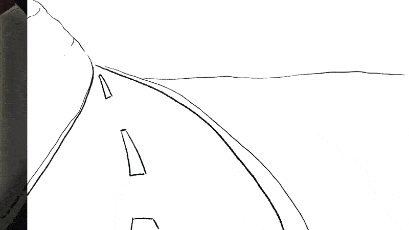
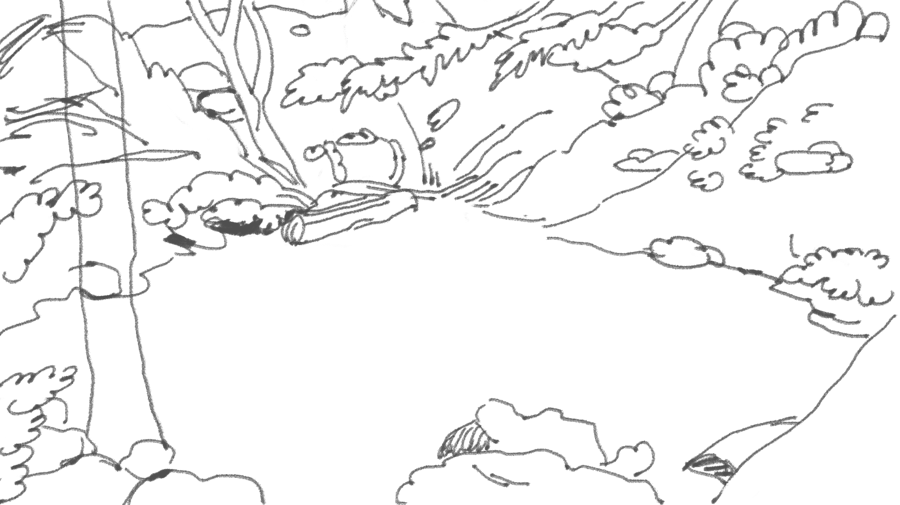

Maybe The Road
Two friends get lost on a road trip.
RISD first semester junior film! Made out of a lot of grief and love and 16mm film textures.
- Role
- All aspects
- Tools
- Toon Boom, After Effects, Premiere Pro, Dragonframe
- Length
- 3:45
- Year
- 2024
Process
-

I had a lot of fun compositing 16mm film textures onto a digital animation! I filmed off of a Steenbeck machine after filming on a Bolex, then used After Effects to comp it. -
Footage from off of the steenbeck machine, bleached 16mm film (with a podcast in the background haha) -

Background before compositing